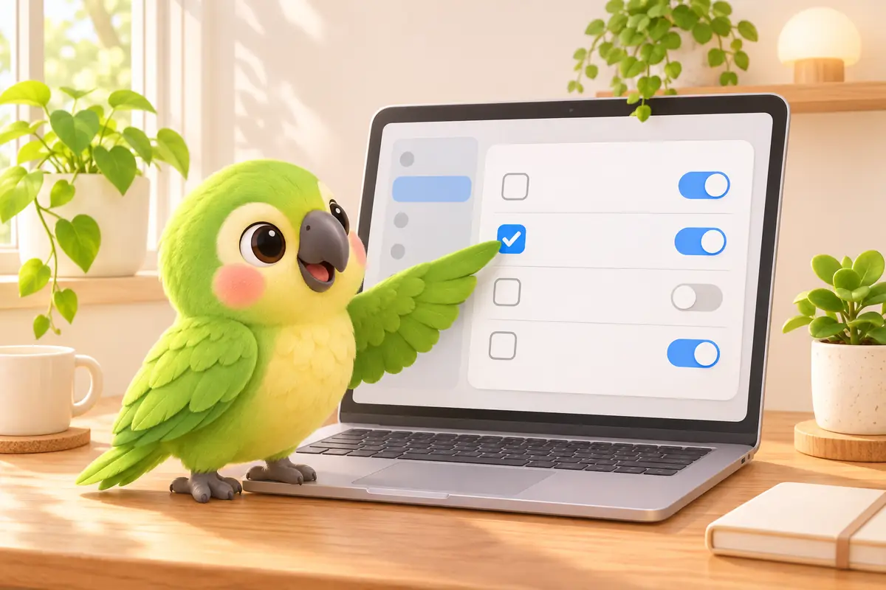

Scan with your iPhone cameraParroting for iPhone · US$4.99 once
Scan with your iPhone cameraParroting for iPhone · US$4.99 onceI’m Sona Orbit, the solo developer behind Parroting, a free Mac dictation app. That’s why I mention it in sections 4 and 5. The built-in Dictation steps and language list come from Apple’s documentation (Dictate messages and documents on Mac and macOS Feature Availability), which I checked in November 2026. Model sizes and features match the Parroting model guide. Parroting’s menu labels reflect version 1.0.6. Models may differ in how well they write colloquial Cantonese characters such as 嘅, 咗, and 啲. I haven’t run a systematic comparison, so try them with your own voice.
1. The short answer
- Dictate a few sentences now and then: Use built-in macOS Dictation. Open “System Settings → Keyboard → Dictation,” turn it on, then choose “Edit” beside “Languages” and select “Cantonese (Hong Kong).”
- Concerned about uploading your voice: Apple lists “Cantonese (Hong Kong)” under on-device Dictation. To find out how your Mac handles your speech, read the text below “Dictation” in settings.
- Want to hold a key to talk, release it to paste, or save words you use often: Install a local dictation app and choose a model that supports Cantonese, such as SenseVoice Small or Qwen3-ASR.
2. Add Cantonese (Hong Kong) to Mac Dictation
- Open the Apple menu in the top-left corner of the screen and choose “System Settings.”
- Click “Keyboard” in the sidebar. Scroll down to “Dictation” and turn it on. If a confirmation appears, click “Enable.”
- In the same section, click “Edit” beside “Languages” and select “Cantonese (Hong Kong).” You can keep Mandarin or English selected too.
- Choose how to start dictating from the “Shortcut” menu. If the top row of your keyboard has a microphone key, you can press and release it to start. Holding it down opens Siri.
On macOS 12 or earlier, the same settings are under “System Preferences → Keyboard → Dictation.”
Apple has a separate list of languages that support on-device Dictation. “Cantonese (Hong Kong)” was on it when I checked. Apple also notes that this feature requires a speech model download, so your Mac may need some time to download it after you add Cantonese. Then return to “Keyboard” settings and read the text below “Dictation.” It tells you whether speech in your current language is processed on your device or sent to a server.

3. Switch between Mandarin and Cantonese
Dictation recognizes one language at a time. If you’ve selected several languages, the current language appears beside the cursor when you start dictating. Click it to switch. If your keyboard has a Globe key, you can use that to choose a language too.
You need to switch languages yourself. Dictation won’t switch based on what you say. Press Esc to stop, or it will stop after 30 seconds of silence.
For full setup steps, shortcuts, and a checklist for when Dictation won’t start, see How to turn on Mac voice typing.
4. Local speech models that support Cantonese
Most local dictation apps let you choose a speech recognition model. Once you download one, recognition runs on your Mac and works without an internet connection. Not every model supports Cantonese. These downloadable Parroting models list Cantonese among their languages:
| Model | Download size | What to know for Cantonese |
|---|---|---|
| SenseVoice Small | 253 MB | Small and the fastest; automatically detects Chinese, Cantonese, English, Japanese, or Korean |
| Qwen3-ASR 0.6B | 850 MB | 30 languages; good Chinese and Cantonese performance, with a balance of accuracy and speed |
| Qwen3-ASR 1.7B | 1.5 GB | The most accurate for Chinese and Cantonese on this list; uses more memory |
| Fun-ASR Nano Multilingual | 891 MB | 31 languages, including Cantonese |
| Whisper Large v3 Turbo | 886 MB | Supports the most languages, but is weaker at Cantonese |
I suggest trying SenseVoice Small first. It’s small, fast, and runs on older Macs. If it makes too many mistakes, try Qwen3-ASR 1.7B. Breeze-ASR-25 isn’t in this table because it’s tuned for Taiwanese Mandarin, not Cantonese.
For a comparison of model speed and error rates, plus a way to test with your own voice, see How to choose a local speech recognition model for Mac.
5. Set Cantonese and Traditional Chinese in Parroting
- Choose a model. Open Parroting’s “Settings.” On the “Talk” page, go to “Speech model & language” and choose a Cantonese-supporting model from the table above. You’ll need to download it the first time.
- Choose a language. Select “Cantonese” from the “Language” menu. You can type “Can” in the search box to find it. “Auto” also works, but choosing Cantonese is usually more accurate.
- Choose Traditional or Simplified Chinese. On the same page, “Chinese script” offers “Traditional,” “Simplified,” and “As Transcribed.” When the recognition language is Cantonese, conversion to Traditional uses Hong Kong character mappings. For example, 里面 becomes 裏面. Mandarin uses Taiwan mappings.
- Try it. The default shortcut is right ⌥ + right ⌘. Hold the keys while you speak, then release them to paste text at the cursor.
You can add names, shop names, or work terms that often get misheard to your personal dictionary under “Words & history.” For help using the dictionary and correcting recognition errors step by step, see Three ways to improve dictation accuracy, from a dictionary to a personal speech model.
6. Built-in Dictation vs. a local model
| Built-in macOS Dictation | Parroting with a Cantonese-supporting model | |
|---|---|---|
| Installation | Built into macOS | Download the app, then a speech model |
| Cost | Free | Free |
| Supported Macs | Intel and Apple silicon | Apple silicon only, macOS 11 or later |
| Where Cantonese is recognized | “Cantonese (Hong Kong)” is on the on-device Dictation list; check the text in settings for your Mac | On your Mac; works offline once the model is downloaded |
| Start and stop | Start with a shortcut or microphone key; stop with Esc | Hold the shortcut to speak; release to paste |
| Frequently misheard words | Correct them manually | Add them to a personal dictionary |
Both are free, and you can use both. Try built-in Dictation first to see how well it handles your accent. If you need more, install a local app. For other options, see A comparison of 7 Mac dictation apps.
7. Frequently asked questions
Does built-in Mac Dictation support Cantonese?
Yes. Open “System Settings → Keyboard → Dictation,” turn on Dictation, then click “Edit” beside “Languages” and select “Cantonese (Hong Kong).”
Do I need internet access to dictate in Cantonese on a Mac?
Apple lists “Cantonese (Hong Kong)” under on-device Dictation and notes that it requires a speech model download first. Check the text below “Dictation” in “Keyboard” settings to see how your Mac processes your speech.
Can I use Mandarin and Cantonese together?
You can select both, but Dictation recognizes one language at a time. After you start dictating, click the language beside the cursor or use the Globe key to switch.
Which local model is most accurate for Cantonese?
Among the models available in Parroting, Qwen3-ASR 1.7B is the most accurate for Chinese and Cantonese, but its download is 1.5 GB and it uses more memory. For a small, fast option, try SenseVoice Small first.
Can Parroting output Traditional Chinese when I speak Cantonese?
Yes. On the “Talk” page, set “Chinese script” to “Traditional.” When the recognition language is Cantonese, conversion uses Hong Kong character mappings. For example, 里面 becomes 裏面.